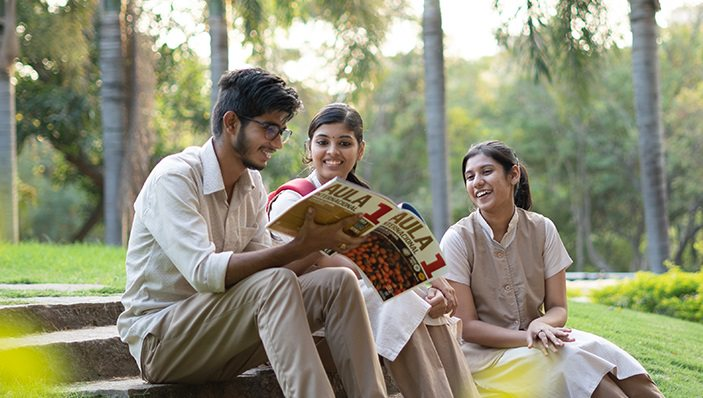
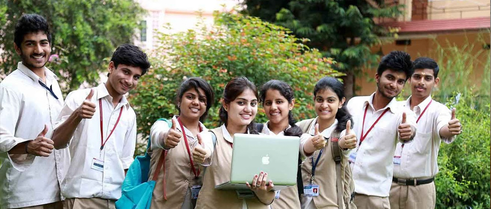
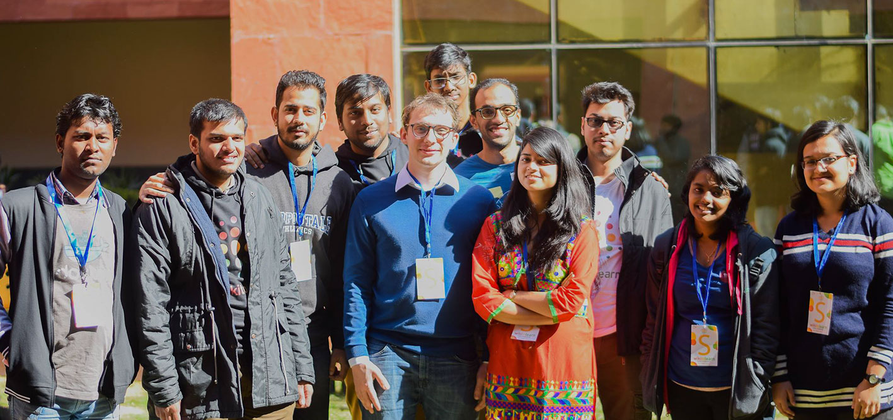

About Us
"Amrita Vishwa Vidyapeetham is a multi-disciplinary,research-intensive,private university,educating a vibrant student population of over 24,000 by 1700+ strong faculty.Accredited with the highest possible ‘A++’ grade by NAAC, Amrita offers more than 250 UG, PG, and Ph.D. programs in Management,
and Medical Sciences including Ayurveda, Life Sciences, Physical Sciences, Agriculture Sciences,Arts & Humanities, and Social & Behavioral Sciences.
With seven campuses at Amaravati, Amritapuri, Bengaluru, Chennai, Coimbatore, Kochi, and Mysuru and a new upcoming campus at NCR Delhi (Faridabad) and spread over 1200+ acres with 100 lacs square feet of built-up space.Amrita is one of India’s top-ranked private university."

Amrita has emerged as the fifth best university in the National Institutional Ranking Framework (NIRF) Rankings 2022. Amrita School of Medicine, Kochi has been ranked 8th Best in Medicine in NIRF Rankings 2022. In THE University Impact Rankings 2022, a pioneering initiative to recognise universities around the world for their social and economic impact for sustainable future, Amrita has been ranked among the Top 50 in the world. In a short span of 18 years, we have established 180+ collaborations with Top 500 world-ranked universities as Amrita is emerging as one of the fastest-growing institutions of higher learning in India World-renowned humanitarian leader, Sri Mata Amritanandamayi Devi, AMMA, is the founding Chancellor and guiding light of Amrita Vishwa Vidyapeetham.

Our vision is to be an exemplary institution that thrives on its commitment to the transformative power of value-based education, providing the impetus to develop the expansiveness to harmonize both scientific knowledge and spiritual understanding, so as to utilize knowledge for societal benefit and contribute to a prosperous and sustainable future for all.
